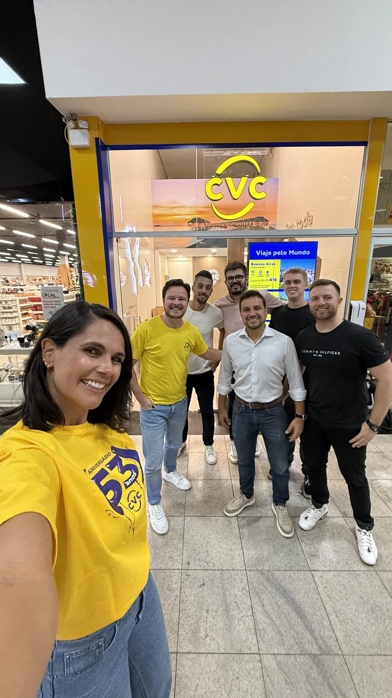
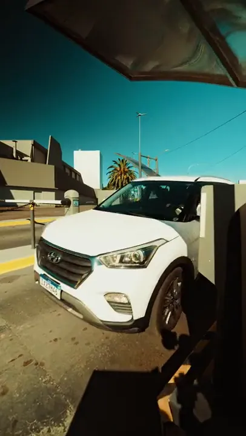

Inauguração CVC.

Para anunciar a nova loja da CVC no Lajeado Shopping, transformamos um passeio comum em vontade de viajar. Na cancela, um aviso de aeroporto. No carro, a bolsa vira mala. No espelho, a constatação: acho que estou precisando de férias.
O desafio
Fazer de uma novidade local algo relevante tanto para quem circula pelo shopping quanto para quem está nas redes sociais.
O objetivo
Gerar tráfego qualificado para a loja e estimular o contato pelo WhatsApp, despertando o desejo de viajar até em quem não estava planejando.
O que entregamos
Roteiro e produção de três vídeos verticais, narrativo, dinâmico e selfie, além do making of e das peças de divulgação das ofertas de inauguração.
Três formatos, uma vontade: viajar
Narrativo, dinâmico e selfie, cada um pensado para um momento do feed.


Acho que estou precisando de férias.